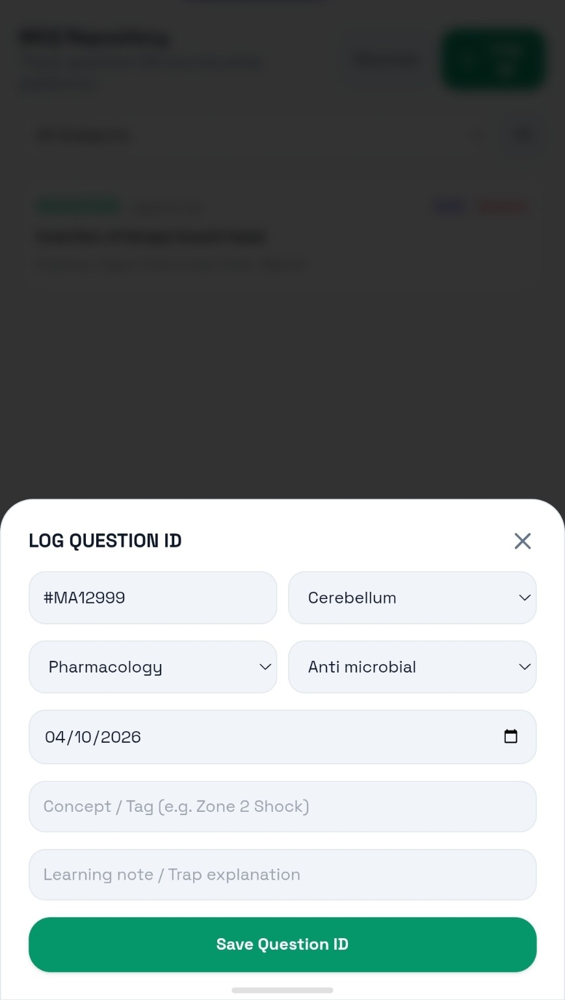

Everything connected.
Trackability is built as a single preparation workspace — not a timer with a few extra buttons.

Home Dashboard
A daily command centre for progress, focus, MCQs, tasks and personal tracking.

Tasks & Time Blocks
Schedule work with dates, durations, repeats and reminders.

Focus + Pomodoro
Log focused sessions and connect them to your study history.

Syllabus
Build subjects and chapters with visible completion.

Revision Hub
Turn revision topics into actionable scheduled work.

MCQ Hub
Organise chapter-wise question practice.

Grand Tests
Record results and understand test performance.

Mistake Book
Capture questions/concepts that need another look.

MCQ ID Repository
Keep specific questions, sources and learning notes.

Gym Tracker
Keep workout records with the rest of your routine.

Protein & Calories
Log daily nutrition and review monthly patterns.

Statistics
Review your activity across study and personal tracking.